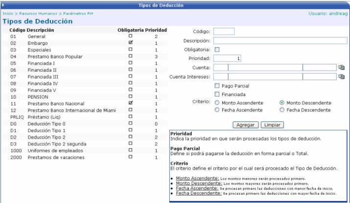

Las deducciones son los rebajos que se le aplican al salario de un empleado. Son únicos y exclusivamente de él. No son compartidos como en el caso de las Cargas. Algunos ejemplos de deducciones son los embargos, los préstamos, etc.
En esta opción se definirán los diferentes tipos de deducción que se puedan aplicar a los empleados:

Obligatoria: Sí = chequeada , No = sin chequear . Si a un empleado se le aplica más de una deducción de tipo obligatoria, se discriminará por la prioridad que se le haya definido.
Prioridad: indica la prioridad (orden) en que procesarán los tipos de deducción.
Pago Parcial: define si el rebajo se hace en forma parcial (en abonos) , o total
Financiada: quiere decir que se cobrarán intereses además del monto de la deducción.
Criterio --> Por ejemplo:
Un empleado tiene dos embargos ambos obligatorios y de prioridad 1. Cómo sabrá el sistema, cuál de los dos debe de aplicar primero?. Para ello existen cuatro criterios de discriminación y el sistema discernirá según el criterio seleccionado.
Monto Ascendente: los montos menores serán procesados de primero.
Monto Descendente: los montos mayores serán procesados de primero.
Fecha Ascendente: se procesarán las deducciones con una fecha de inicio menor, de primero.
Fecha Descendente: se procesarán las deducciones con una fecha de inicio mayor, de primero